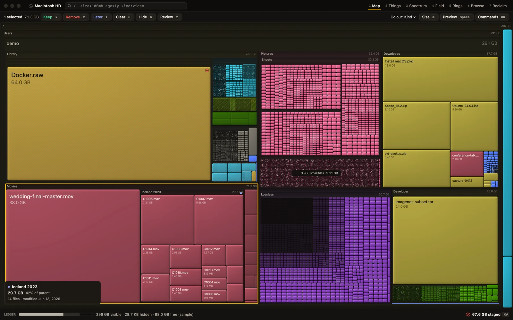
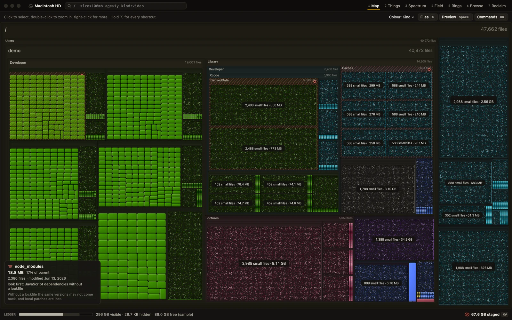
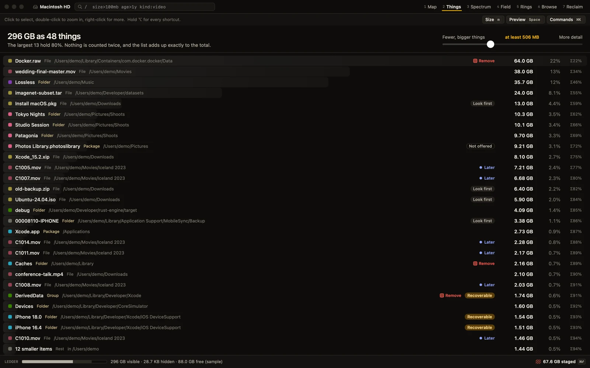
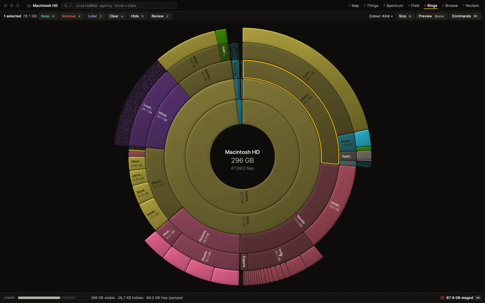
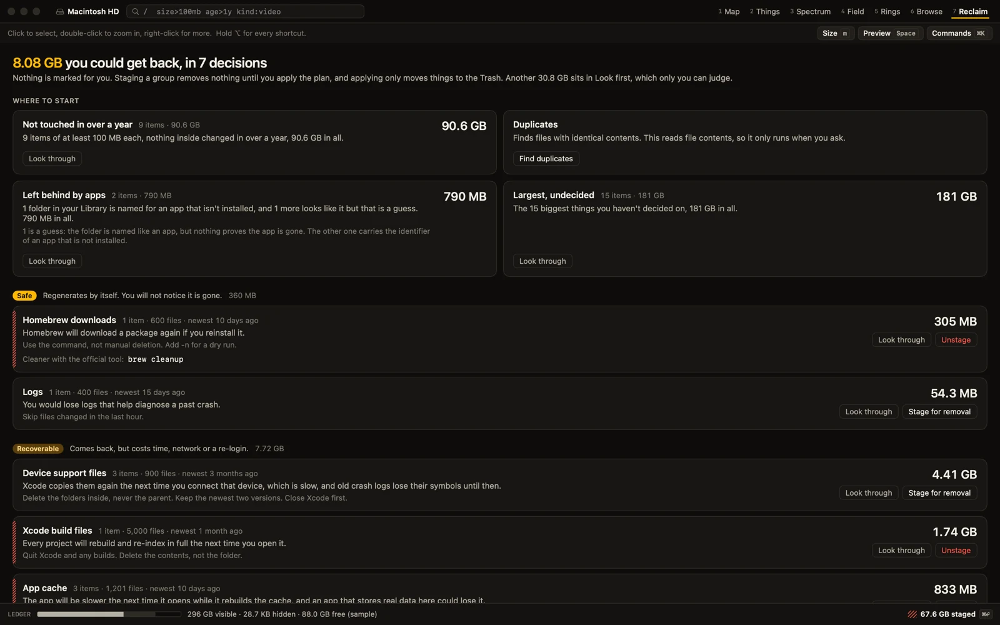
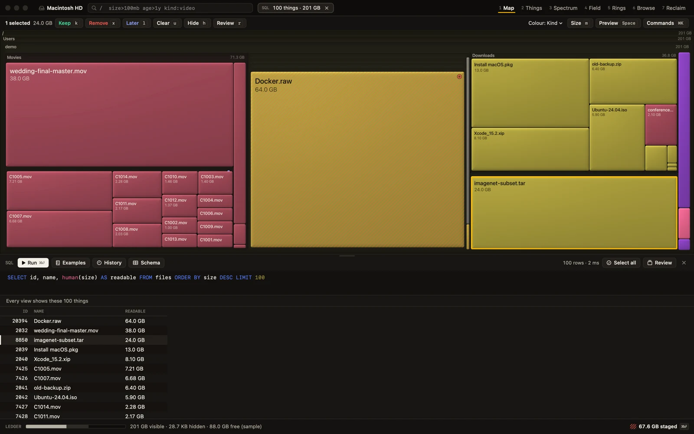
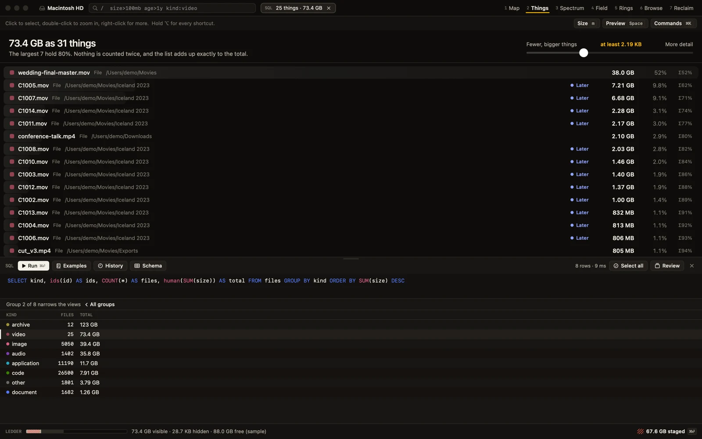
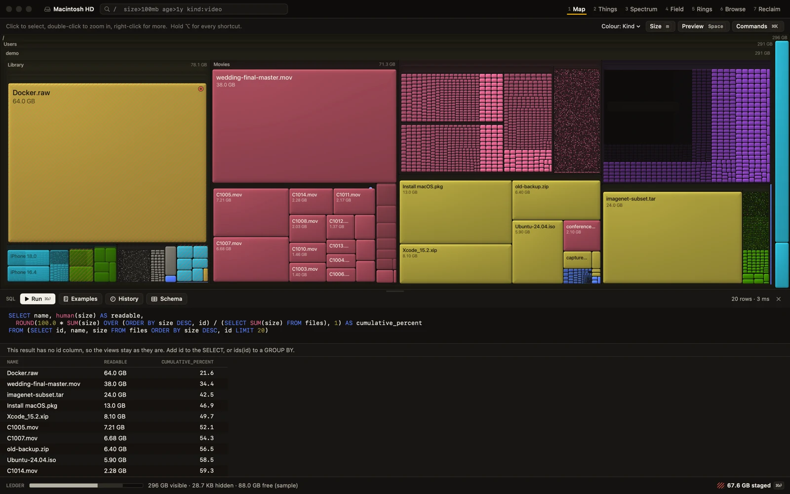
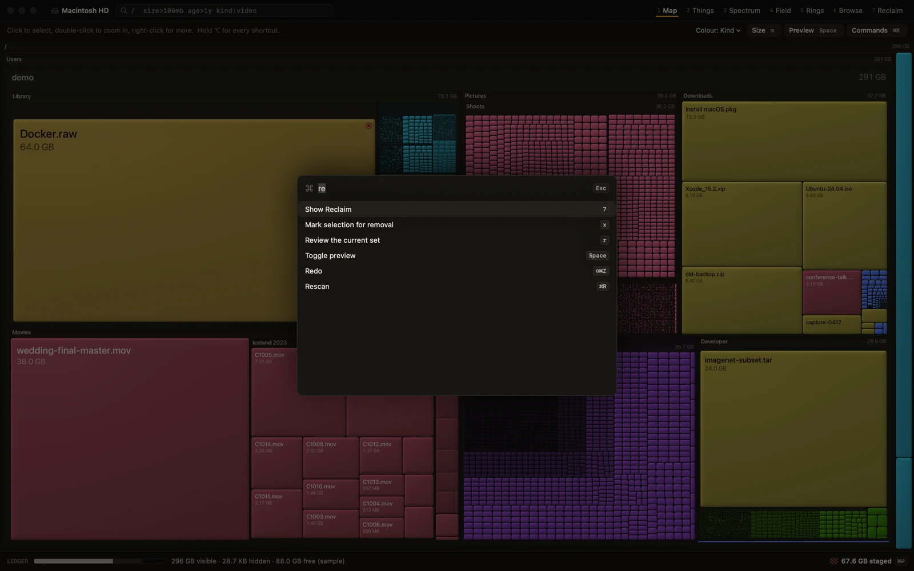

What is in the app.
There are seven lenses, which is what I call the different ways of looking at your disk. They all read the same data and share one selection and one query. The app is dark only and native Swift, and it draws on the GPU only when something changes. All the screenshots are of the real app on a built-in demo disk.
Where did it all go?
This is a treemap you can keep zooming into, with labels on the tiles and nested folder headers. The layout is fixed in world space, so zooming doesn't reflow anything and you don't lose your bearings. Tiles too small to see merge into a stippled dust tile for each folder, labeled with its count and size, and if you zoom into the dust it keeps going.
Press m to switch between bytes and file count. A swarm of small files that you can't see by bytes turns into a giant by count.

What about all the small files?
Now this is tricky, because there could be a massive number of them. Most tools drop small files or gray them out, which makes the picture wrong without telling you. Here they are counted and shown, and they resolve into tiles as you zoom in. To see the difference, look at the same folder by bytes and then by file count.

What are the biggest things?
This is a ranked list that is cut at a size threshold rather than a depth, with a slider for the level of detail and a rail showing the cumulative share. Files and folders sit next to each other, nothing appears twice, and it all adds up to the total. Details

What shape is my disk? What is old, big and forgotten?
Spectrum shows count and bytes per size range as separate small multiples, along with a cumulative curve that answers "how many items hold 80% of my disk?". Field plots every file as a point of light, age against size. If you brush either one the query updates, so what you selected stays visible and you can edit it.

How is it nested? Where is that thing I know?
Rings is a sunburst that is there for the structure, so read the sizes from the labels and the hover card. Browse is Miller columns with inline size bars, fully keyboard-driven, for those of us who think in Finder.

What can I remove safely?
Rules are grouped into families by tier. Each family tells you what the place is, what removing it costs, any condition such as "close Xcode first", and the official cleanup command where one exists. The commands are only shown, and the app never runs them. One decision can cover hundreds of items, and duplicates and leftovers of apps that are gone live here too.
The tiers are safe, rebuild, review and never offered, and if there is any uncertainty the answer is always review. Every rule, with its source

Going through files the way you go through photos.
k keeps, x removes and l leaves it for later, from any view. Review takes the current set full screen, with a preview and a backlog that shrinks to zero. Decisions carry across scans, and if an item changes after you judged it, it gets flagged and skipped.
When you apply, you get the Plan and not a stack of "Are you sure?" dialogs. It lists the exact roots to move to the Trash, what is protected inside them, what is blocked and why, and an estimate of what you get back. One step undoes it. The scan root, your home folder, system folders and protected items can never be planned for removal.

Every byte accounted for.
This is one bar for the whole volume: visible, hidden, unreadable and free. Hidden doesn't mean gone, since ignore rules hide things from the views but not from the accounting, and the Ledger shows what each rule hides. If you click it you get the reconciliation, which covers logical against allocated size, hard-link and clone savings, snapshots and purgeable space, and a labeled remainder. It also tells you why the total differs from Finder.

Asking a question in SQL.
Press s for the SQL drawer. A result with an id column becomes the set that Map, Things, Spectrum, Field and Rings all show, so SELECT id ... LIMIT 20 turns each of them into just those 20 files. If you add ids(id) to a GROUP BY, you can click a group to narrow down to it. Without an id the result is a table and the views stay as they are.
It is SQLite's SELECT dialect and it is read-only, so writes are refused and SQL never marks or removes anything. Marks still go through selection and k x l u. Folders bring their whole subtree along, and results combine with the / query. SQL in the docs


From a group to a view in one click.
To give an idea of the speed, these were measured in a release build on a synthetic disk of 4,856,132 items, on one machine. A group by kind with a sum and a count took 729 ms, a filter and sort for the top 100 took 173 ms, and a group by extension with ids took 1,282 ms. The tests also make sixteen write attempts, and all of them get refused. All five figures

One query language in every lens.
/ opens the query, and something like size>100mb age>1y kind:video -path:Photos safe:safe filters every lens live. ⌘K runs any command and jumps to an exact path. Query language

Viewing a file before you decide.
Space opens a pane from any lens, with video and a filmstrip scrubber, images decoded to screen size, audio waveforms, PDFs, text, and QuickLook for the rest. An iCloud placeholder is never downloaded by accident, so you get its metadata and a Download button instead. Reading a file never changes it.